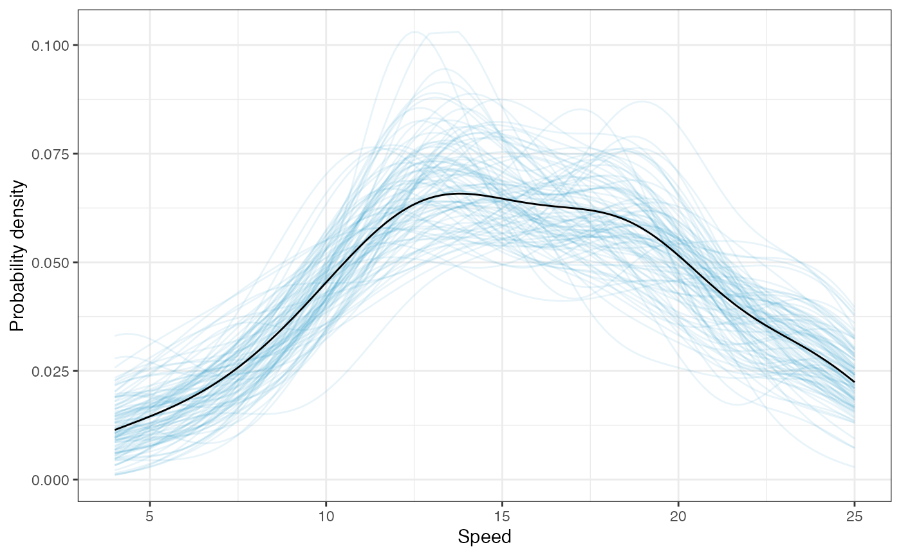

Confidence Envelopes for Density Plots
Andrew Zieffler
4/13/2020
Source:vignettes/uncertainty.Rmd
uncertainty.RmdThe educate package has two functions to generate confidence envelopes for kernel density smoothers:
-
stat_density_confidence()generates normal theory based confidence envelopes -
stat_density_watercolor()generates bootstrap based confidence envelopes
Both functions can be used as a layer directly in ggplot. Below I illustrate the usage and functionality of each of these functions.
stat_density_confidence()
## Registered S3 method overwritten by 'mosaic':
## method from
## fortify.SpatialPolygonsDataFrame ggplot2
# Normal theory based confidence envelope
ggplot(data = cars, aes(x = speed)) +
stat_density_confidence() +
stat_density(geom = "line") +
theme_bw() +
xlab("Speed") +
ylab("Probability density")Optional parameters to the function include:
-
h=: A normal kernel function is used andhis its standard deviation. If this parameter is omitted, a normal optimal smoothing parameter is used. -
fill=: Fill color for the confidence envelope. The default isfill="skyblue" -
model=: The model to draw the confidence envelope for. The default ismodel="none"which creates the confidence envelope from the data. Usingmodel="normal"creates the confidence envelope based on a normal distribution.
# Normal theory based confidence envelope from a normal distribution
ggplot(data = cars, aes(x = speed)) +
stat_density_confidence(model = "normal", fill = "red") +
stat_density(geom = "line") +
theme_bw() +
xlab("Speed") +
ylab("Probability density")The argument model="normal" is useful for examining
distributional assumptions. For example, could the empirical density
have been generated by a normal model? Yes, since the empirical density
is completely ontained within the confidence envelope, the data are
consistent with what we expect from a normal model within sampling
error.
Bootstrapped Confidence Envelopes
We can create a bootstrapped confidence envelope by using the
stat_density_watercolor() layer in ggplot. The
parameter k= sets the number of bootstrap replications
(default is k=1000).
# Bootstrap based confidence envelope
ggplot(data = cars, aes(x = speed)) +
stat_density_watercolor(k = 100, alpha = 0.1) +
stat_density(geom = "line") +
theme_bw() +
xlab("Speed") +
ylab("Probability density")## Boostrapping densities ...
Other options include:
-
alpha=: Transparency level for the paths that make up the bootstrapped densities. This may need to be adjusted if the argumentk=is changed. The default value isalpha=0.03. -
color=: Color for the bootstrapped densities. The default iscolor="#1D91C0 -
model=: The model to draw the confidence envelope for. The default ismodel="none"which creates the confidence envelope from the data. Usingmodel="normal"creates the confidence envelope based on a normal distribution.
Aside from changing the color and transparency of the bootstrapped
densities (color= and alpha= respectively),
you can also change the number of bootstrapped samples
(k=).
# Bootstrap based confidence envelope based on a normal distribution
ggplot(data = cars, aes(x = speed)) +
stat_density_watercolor(k = 200, alpha = 0.1, color = "orange", model = "normal") +
stat_density(geom = "line") +
theme_bw() +
xlab("Speed") +
ylab("Probability density")## Boostrapping densities ...